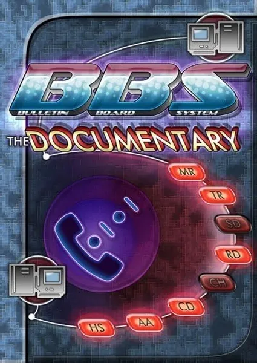

Документальный · 2005 · История
Трехчасовая эпопея Джейсона Скотта о BBS (системах электронных досок объявлений) — сетях, существовавших до появления интернета, когда люди связывались друг с другом через модемные соединения в 80-х годах. Именно здесь зародились онлайн-сообщества, «холивары», первые вирусы и первые модераторы. Этот документальный фильм построен на интервью с людьми, которые создавали этот мир — от авторов программного обеспечения до системных операторов (сисопов). Фильм обязателен к просмотру для всех, кто рассуждает о современных социальных сетях: всё это уже было раньше — просто происходило медленнее, на скорости 2400 бод.
Jason Scott's three-hour epic about Bulletin Board Systems — the networks before the internet, when modem calls connected people in the 80s. Online communities, flame wars, the first viruses and the first moderators all appeared here. A documentary built on interviews with the people who built it all, from software authors to sysops. Required viewing for anyone talking about social media today: it all happened before, just slower, at 2400 baud.
← Вернуться в каталог IT Movies